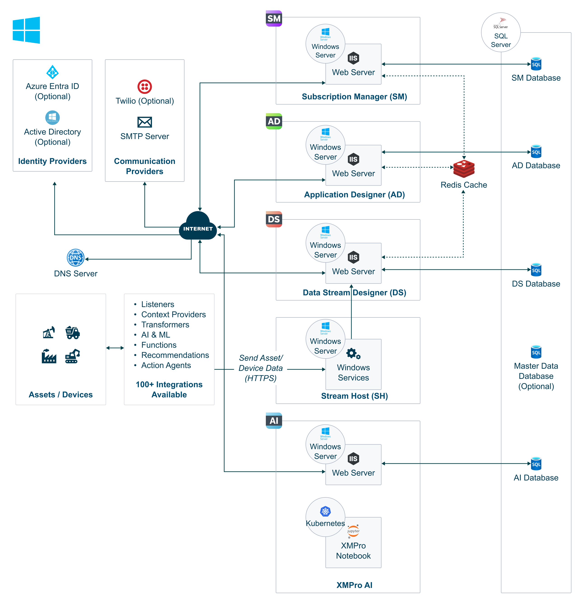

Windows Server 2022
Deploy XMPro Platform on Windows Server 2022
This document will guide you through how to deploy the XMPro Platform on a single Windows Server 2022 machine. For custom deployments, including multi machine deployments, contact XMPro for additional instructions.
Warning
IMPORTANT: These installation instructions are intended for System Administrators with full administrator access to the Windows environment. Administrative privileges are required throughout the installation process.
Note
TIME REQUIREMENT: The complete installation process typically takes approximately 3 hours. Please plan accordingly and ensure uninterrupted access to the system during this time.
Architecture
The following deployment diagram shows an example on-premise architecture and the necessary resources for the XMPro platform in Microsoft Windows.

Last modified: May 29, 2025